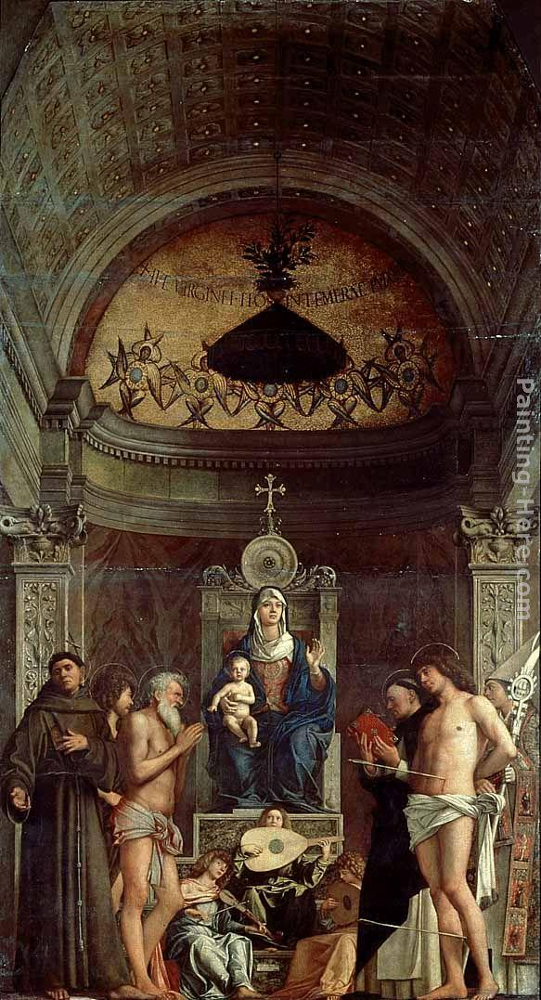

https://www.chegg.com/flashcards/art-history-323-exam-1-ead6f418-129a-4822-8778-6aafac2054cc/deck
Raphael
Triumph of Galatea
West wall of the Sala dei Galatea, Chigi Villa (Villa Farnesina), Rome
ca. 1513
Fra Bartolommeo Vision of St. Bernard 1504-07

begining and the end are same except direction
Fra Bartolommeo
God Appearing to Saint Mary Magdalen and Saint Catherine of Siena
1509
Giorgione Castelfranco Madonna ca. 150

Giovanni Bellini
San Giobbe Altarpiece 1480s
San Giobbe Altarpiece 1480s
Giovanni Bellini Transfiguration of Christ late 1480s

Fra Bartolommeo
Mystic Marriage of St. Catherine of Siena (Pitti version)
1511-12
Sebastiano del Piombo Polyphemus
West wall of the Sala dei Galatea, Chigi Villa (Villa Farnesina), Rome
1512
Raphael
Sistine Madonna 1513
Raphael
Madonna of Foligno 1511-12
Raphael
La Stanza della Segnatura: Disputa Vatican, Rome
1509-11
Michelangelo
Sistine Chapel ceiling spandrel: Brazen Serpent
1511-12
Michelangelo
Sistine Chapel ceiling: Creation of Adam 1511-12